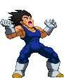

activate Rage Mode (LV2)
Activating Rage Mode has Vegeta going into a fit of fury! This is what changes gameplay-wise:
- Upon activation you will see a full Buffer Bar (blue) and an empty Rage Bar (fills in orange).
- You gain access a third level of charge for his Ki Blast. His EX Ki Blast also becomes this 3rd level.
- His Ki Blast (only the first out of a series you fire) gets boosted up one level by default.
- You can now cancel non-EX Firecracker into EX Ki Blast, and EX Ki Blast into EX Machine Gun Temper.
- Performing any Ki Blast, MGT, Firecracker, Galick Gun and Bakuhatsuha attacks fill your Rage bar.
- EX Ki Blast and EX MGT can be performed with no power, but they drain the Buffer Bar.
- If the Buffer Bar is completely drained, it cancels out the Rage Mode.
- Galactic Gunfire costs LV2 instead of LV3. It takes you out of the mode upon performing it.
- The button-mash aspect for Galactic Gunfire is removed and you gain Finishers at the end of it:
-Lv0 - Charged Blast.
-Lv1 - Dirty Fireworks.
-Lv2 - Death Cannon.
-Lv3 - Final Galick Gun.
- Upon activation you will see a full Buffer Bar (blue) and an empty Rage Bar (fills in orange).
- You gain access a third level of charge for his Ki Blast. His EX Ki Blast also becomes this 3rd level.
- His Ki Blast (only the first out of a series you fire) gets boosted up one level by default.
- You can now cancel non-EX Firecracker into EX Ki Blast, and EX Ki Blast into EX Machine Gun Temper.
- Performing any Ki Blast, MGT, Firecracker, Galick Gun and Bakuhatsuha attacks fill your Rage bar.
- EX Ki Blast and EX MGT can be performed with no power, but they drain the Buffer Bar.
- If the Buffer Bar is completely drained, it cancels out the Rage Mode.
- Galactic Gunfire costs LV2 instead of LV3. It takes you out of the mode upon performing it.
- The button-mash aspect for Galactic Gunfire is removed and you gain Finishers at the end of it:
-Lv0 - Charged Blast.
-Lv1 - Dirty Fireworks.
-Lv2 - Death Cannon.
-Lv3 - Final Galick Gun.
Crazy Fireworks
Vegeta combines his skills from Dirty Fireworks and Bakuhatsuha which creates this new attack!
With a violent arm swing, a chain of explosions are set off across the stage in an arc. The higher the level of Rage Mode you are in before activating it,
the more explosions are created. The opponent, once hit by any of them, will be hopelessly carried along with the chain.
As with ever 'Power Mode Exit' move, as the name implies, performing it cancels out your Rage Mode.